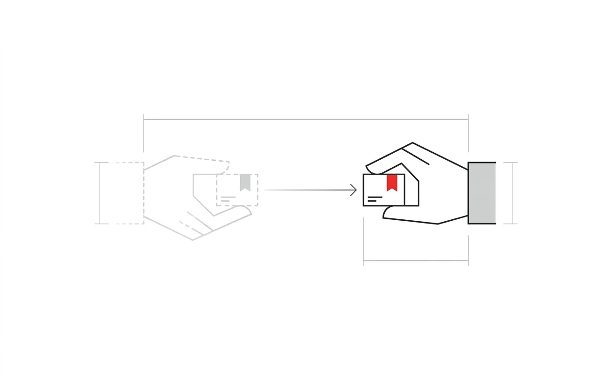

Fourteen chapters. Only the simple words.
Rust — like
Thing Explainer
Rust, told using only common, everyday words — the way you would explain it with a pencil and a piece of paper, not a reference manual. Every idea gets a real picture before it gets a rule: friends sharing toys, borrowed books, a strict friend checking the sharing rules. When a fancy word is truly needed, it shows up once in quotes, gets explained in plain words, and then steps aside. Small code is shown and walked through line by line — this is still a programming book, just not a scary one.

An International-style graphic: flat geometric shapes on a white field, black and grays with one Swiss-red accent, strict alignment and generous whitespace. Reductive and rational — a diagrammatic image, no shadows, no gradients, no ornament, no dramatic perspective. Subject: two simple outlined hands, drawn as flat geometric shapes, passing one small labeled box from the left hand to the right hand along a thin straight arrow; the left hand is fading/dashed to show it no longer holds the box. Thin uniform strokes throughout, orthographic and flat, with a couple of faint dimension lines like a drafting plate. No text or lettering baked into the artwork anywhere. Generous whitespace, subject centred with safe margins on every side. Target size ~1600×1000px, 16:10 landscape; the art is letterboxed into that box, so keep the subject away from the edges.
Generate this with your image agent, then drop the file here.
Contents
- 01The Deal Rust Makes With YouThe Rust Promise
Why Rust asks more of you up front — and what you get back. - 02Who Gets to Keep the ToyOwnership
Every value has exactly one owner, and that's the whole trick. - 03The Strict Friend Who Checks All the Sharing RulesBorrowing
How to use something without taking it home. - 04How Long a Borrowed Thing Is Allowed to Stick AroundLifetimes Without Fear
Proving a borrowed thing won't outlive what it points to. - 05Only One Hand on the Marker at a TimeMutation and Interior Mutability
Why changing things is a special, watched action. - 06A Box That Can Only Hold One Kind of Thing at a TimeModeling States With Enums
Naming every shape a value is allowed to take. - 07Checking Every Single Box Before You Move OnPattern Matching as Proof
Rust won't let you forget a case exists. - 08Bad News You Can Hold in Your HandErrors Are Values
Failure you can pass around, check, and hand back. - 09A List of Things Something Must Know How to DoTraits and Generic Constraints
Writing code that works for anything that can do the job. - 10Passing One Toy Between Many Friends, SafelyShared Ownership and Smart Pointers
When more than one owner is actually the right call. - 11Teaching the Rulebook to Watch Many Hands at OnceConcurrency in the Type System
Letting many hands work at once, without a mess. - 12Waiting Without Standing StillAsync Is a Different Kind of Waiting
Waiting for something without freezing everything else. - 13The Locked Door Marked “You Are on Your Own”Unsafe and the Safe Boundary
The door marked do not enter, unless you really know. - 14Learning to Hear What the Rulebook Is Really Telling YouThinking in Rust
Turning the compiler's complaints into good instincts. - —Cheatsheet
Every rule from the book, on one page.
How to read this
In order, one chapter at a time. Each chapter is small on purpose: one picture, one rule, one reason it's worth it. If a chapter uses a big word, it always says so first — "this is called a …" — before using it again in plain type.